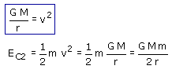

Cuando el satélite se ha detenido a la altura requerida se enciende el motor y le comunica la velocidad adecuada para recorrer la órbita. (Esto plantea un problema técnico: el satélite se movía en dirección radial para ascender y tiene que moverse en dirección tangencial para recorrer la órbita, deberá llevar algún artilugio que cambie la dirección del movimiento) Para calcular la energía cinética del satélite hay que aplicar la relación entre velocidad y radio orbital:  |